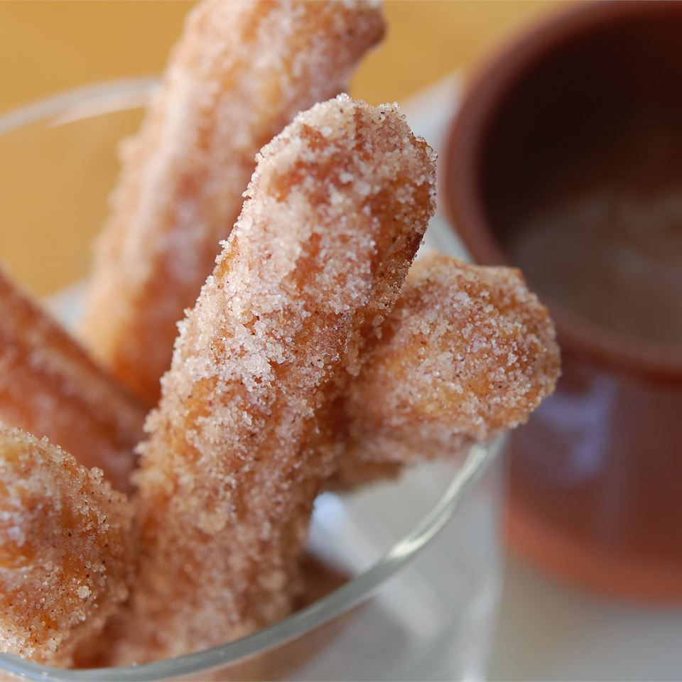

Churros

Recipe Description
Churros (Mexican fritters) are very common at fairs. In my border hometown,
the line at this stand is always overwhelming.
Ingredients
- Water: This recipe for churros starts with a cup of water.
-
Sugar: White sugar goes into the churro dough and into the cinnamon-sugar
topping.
- Salt: A pinch of salt enhances the flavors of the other ingredients.
- Oil: You'll need vegetable oil for the dough and to fry the churros.
- Flour: All-purpose flour gives the churro dough structure.
-
Cinnamon: The fried churros are rolled in a cinnamon-sugar mixture before
serving.
Steps
-
Boil water, sugar, salt, and vegetable oil. Remove from the heat, then stir
in flour.
- Transfer the dough to a pastry bag and pipe into strips.
- Fry the strips in hot oil until they're golden.
- Drain the churros, then roll in cinnamon-sugar.